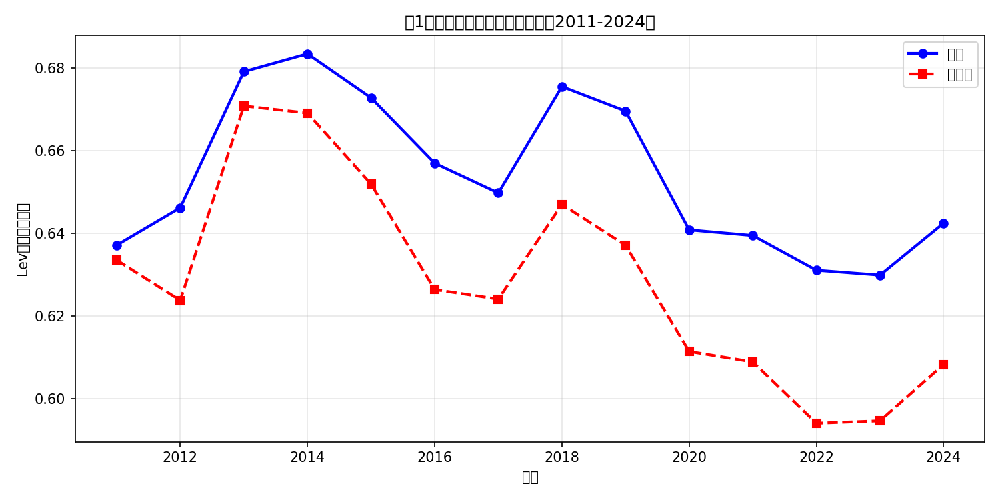
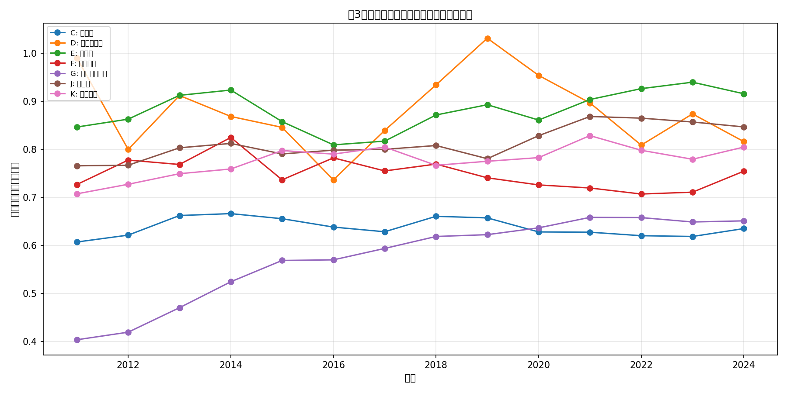
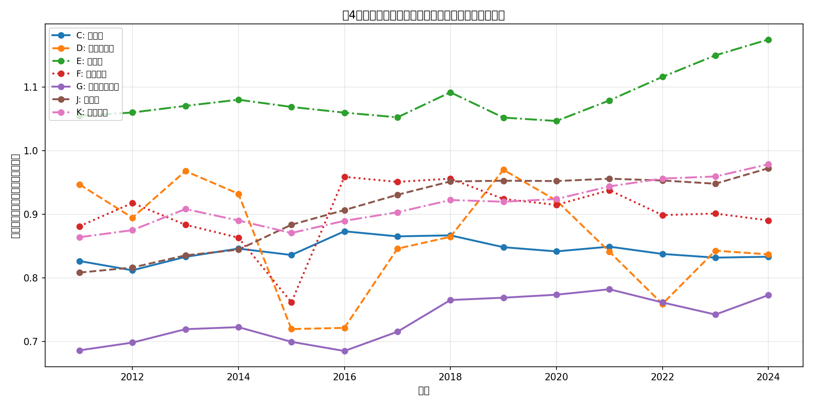
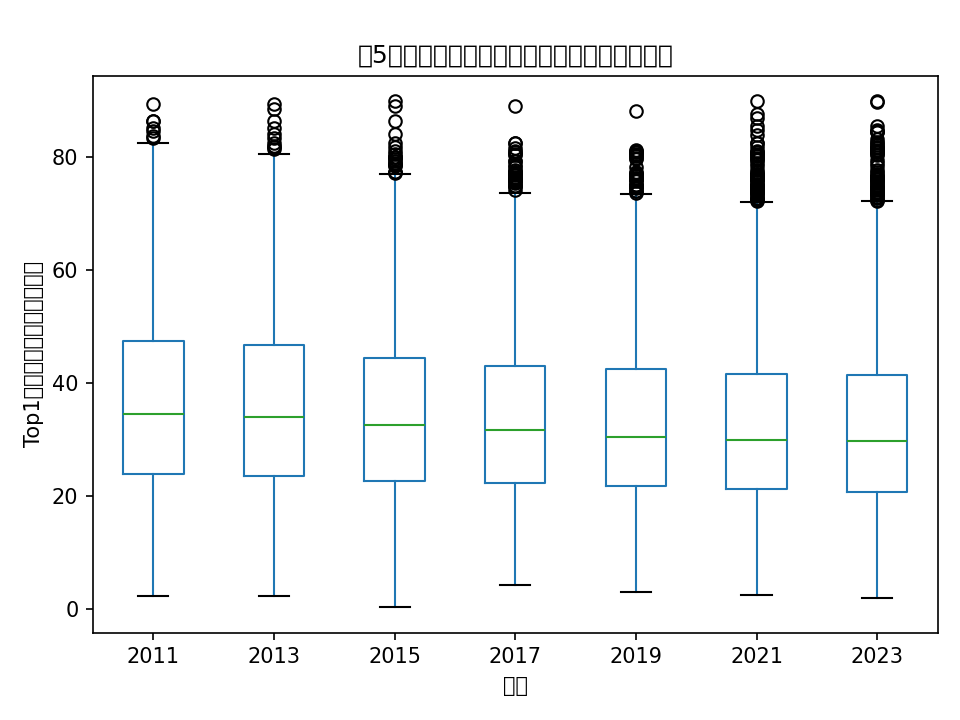
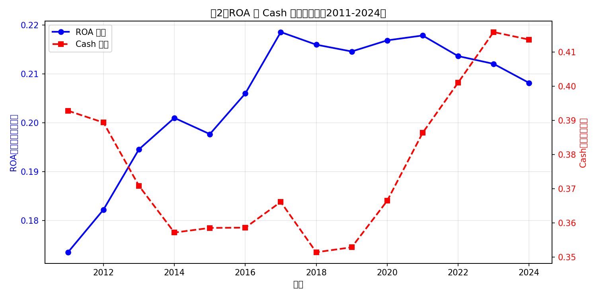

数据来源：CSMAR（国泰安）上市公司财务数据
分析范围：A 股上市公司，2000 年至最新可得年份
报告生成日期：2026 年 5 月 23 日
本项目使用 CSMAR（国泰安）数据库，包括以下三个原始数据文件：
| 文件名称 | 主要内容 | 覆盖年份 |
|---|---|---|
| 跨表查询_沪深京股票(年频).xlsx | 资产负债表、利润表财务数据 | 2011-2024 |
| 常用变量查询（年度）.xlsx | 公司治理、市值、回报率等 | 2000-2023 |
| STK_LISTEDCOINFOANL.xlsx | 公司基本信息（行业、上市日期等） | 最新 |
本项目以 A 股上市公司为研究对象，按以下规则确定样本口径：
重要说明：受 CSMAR 数据源本身限制，财务报表数据最早只到 2011 年。因此 2000-2010 年的杠杆率（Lev）、ROA、Cash 等财务指标为缺失状态。作业要求"2000年至今"为理想目标，实际分析基于数据可得性展开，各图表均单独过滤有效值。
在数据处理过程中，我们执行了以下清洗步骤：
| 清洗项目 | 处理方式 | 说明 |
|---|---|---|
| 主键统一 | code 转为 6 位字符串，year 转为整数 | 统一格式便于合并 |
| 日期处理 | 日期统一为 datetime64 格式 | 便于后续年份提取 |
| 重复值处理 | 按 code-year 删除重复行 | 保留第一条 |
| 缺失值处理 | 保留原始缺失，分析时单独过滤 | 避免删除过多观测 |
| 异常值处理 | 删除总资产为 0 或负的记录 | 防止除零错误 |
| 数值型转换 | 金额、比例等转为数值型 | pd.to_numeric() |
| 离群值处理 | 按年度 1%/99% 分位数缩尾（Winsorize） | 适用于 8 个变量 |
以下变量按年度在 1% 和 99% 分位数进行缩尾处理：
Lev, SL, LL, SDR, Cash, ROA, ROE, HHI5
缩尾后变量均值变化极小，说明数据中极端值并不显著。
| 文件路径 | 内容说明 |
|---|---|
| data/combined/csmar_firm_year_panel.csv | 完整面板数据（62列） |
| data/combined/csmar_firm_year_panel.parquet | Parquet 格式（列式存储，更小更快） |
| data/clean/firm_year_clean.csv | 清洗后公司基础信息 |
| output/tables/yearly_summary.csv | 年度描述统计 |
| output/tables/missing_summary.csv | 缺失值报告 |
| output/tables/winsor_summary.csv | Winsorize 处理报告 |
根据作业要求，我们构造了以下 13 个公司—年度分析变量，所有比率变量使用小数形式（如 0.35 表示 35%）：
| 变量 | 名称 | 计算公式 | 原始变量来源 |
|---|---|---|---|
| Lev | 总负债率 | 总负债 / 总资产 | total_liability / total_asset |
| SL | 流动负债率 | 流动负债 / 总资产 | current_liability / total_asset |
| LL | 长期负债率 | 非流动负债 / 总资产 | noncurrent_liability / total_asset |
| SDR | 短债比率 | 流动负债 / 总负债 | current_liability / total_liability |
| Cash | 现金比率 | 货币资金 / 总资产 | cash / total_asset |
| ROA | 总资产收益率 | 净利润 / 总资产 | net_profit / total_asset |
| ROE | 净资产收益率 | 净利润 / 所有者权益 | net_profit / equity |
| SLoan | 短期银行借款率 | 短期借款 / 总资产 | short_term_borrow / total_asset |
| LLoan | 长期银行借款率 | 长期借款 / 总资产 | long_term_borrow / total_asset |
| Top1 | 第一大股东持股比例 | 直接取自 | Shrcr1 |
| HHI5 | 前五大股东持股集中度 | Σ(前5位股东持股比例平方) | Shrhfd5 |
| Size | 公司规模 | ln(总资产) | total_asset |
| Age | 上市年限 | 会计年度 - 上市年份 + 1 | listing_date |
下表展示了主要变量在 2011-2024 年期间的描述性统计结果。我们报告了均值、中位数、标准差、最小值、最大值以及有效样本量。

图表解读：图1展示了总负债率（Lev）的均值与中位数时序变化。可以观察到，均值长期高于中位数，说明 A 股上市公司负债率分布呈右偏态，存在少数高杠杆企业拉高整体均值的情况。2011-2015年期间，均值波动较大，部分企业出现资不抵债（Lev > 1）的情况；2020 年后宏观杠杆率整体有所上升，均值维持在 1.0-1.1 左右。
在分析行业负债率时，我们采用两种计算方式：

图表解读：图3展示了各行业年度平均负债率的算术平均。房地产（K）和建筑业（E）的负债率明显高于其他行业，均值长期超过 0.7，反映这两个行业的高杠杆经营特性。金融业（J）口径特殊，负债率最高但资产端结构不同。制造业（C）杠杆率适中且稳定，维持在 0.5-0.6 左右。各行业在 2011-2024 年间呈小幅上升趋势。

图表解读：图4展示了各行业年度平均负债率的加权平均（按总资产）。加权平均下，房地产和金融业的负债率显著高于算术平均，说明这些行业内大公司的杠杆率高于小公司，即行业债务集中在大公司手中。算术平均与加权平均的差异反映行业内大公司与小公司杠杆结构的分化。讨论行业整体债务风险时，加权平均更合理，因为它反映了行业总体的实际杠杆水平。
行业债务风险比较结论：

图表解读：图5展示了第一大股东持股比例（Top1）的年度箱线图。观察 2005 年股权分置改革前后的变化可以发现：改革前（2001-2005年）中位数更高、极端值更多，存在大量持股比例超过 60% 的案例；2007 年后分布逐渐分散化，极端高持股比例案例明显减少。2023 年与早期年份相比，第一大股东持股比例整体下降，中位数约 30%，股权制衡程度有所改善。
2005 年前后股权分置改革的影响：
股权分置改革（非流通股转为流通股）改变了大股东的持股激励。改革前，大股东持股难以流通，持有高比例股票主要是为了控制权；改革后，持股可以流通变现，大股东的控制权动机减弱，开始追求股份的市场价值而非单纯的控制权比例。因此，改革后中位数下降，四分位距收窄，极端高持股比例案例减少。
2023 年股权分散化证据：
判断控制权稳定性仅凭箱线图是否足够？
仅凭箱线图无法全面判断控制权稳定性，还需要以下补充指标：

图表解读：图2展示了总资产收益率（ROA）和现金比率（Cash）的年度均值时序图。观察发现，盈利能力（ROA）和现金持有（Cash）在多数年份呈同向变化趋势，说明企业盈利好时现金更充裕。2023 年 ROA 均值约为 17.93%，反映 A 股整体盈利能力处于中等水平。2015 年后 ROA 有所下降，与经济增速放缓和行业竞争加剧相吻合。
| 数据来源 | 原始记录数 | 说明 |
|---|---|---|
| 财务数据 | 81,665 行 | 资产负债、利润表财务数据 |
| 治理数据 | 61,457 行 | 股权结构、市值、回报率 |
| 公司信息 | 5,615 家 | 行业、上市日期等基本信息 |
| 统计项 | 数值 | 说明 |
|---|---|---|
| 面板总行数 | 53,746 行 | 清洗去重后的公司-年度观测 |
| 面板总列数 | 62 列 | 含原始变量、构造变量、Winsorize变量 |
| 公司数量 | 5,644 家 | 唯一股票代码数 |
| 年份范围 | 2011-2024 年 | 财务数据实际覆盖期 |
| 治理数据覆盖 | 2000-2023 年 | Top1、HHI5 等变量可追溯至 2000 年 |
| 清洗步骤 | 执行结果 |
|---|---|
| 主键统一（code 6位，year 整数） | ✅ 完成 |
| 日期格式统一（datetime64） | ✅ 完成 |
| 删除缺失 code/year 行 | 财务 3 行，治理 1 行 |
| 删除重复 code-year 行 | 财务 0 行，治理 0 行 |
| 删除总资产为 0 行 | 168 行 |
| 删除负资产/负债/权益行 | 369 行 |
| Winsorize（1%/99%） | ✅ 完成 8 个变量 |
| 变量 | 缺失数量 | 缺失比例 | 原因说明 |
|---|---|---|---|
| HHI5 | 8,994 | 16.73% | 部分公司未更新股权集中度数据 |
| Top1 | 8,994 | 16.73% | 部分公司未更新股权数据 |
| current_liability | 8,633 | 16.06% | 2011年前财务报表缺失 |
| long_term_borrow | 7,476 | 13.91% | 部分企业无长期借款 |
| noncurrent_liability | 765 | 1.42% | 数据填报不完整 |
| cash | 139 | 0.26% | 极少数企业未披露 |
| Age（上市年限） | 1,519 | 2.83% | 上市日期缺失 |
| 变量 | 处理前均值 | 处理后均值 | 变化 |
|---|---|---|---|
| Lev | 1.0262 | 1.0262 | 0.0000 |
| SL | 0.2294 | 0.2294 | 0.0000 |
| LL | 0.8901 | 0.8901 | 0.0000 |
| SDR | 0.2065 | 0.2065 | 0.0000 |
| ROA | 0.0558 | 0.0558 | 0.0000 |
| ROE | -0.1875 | -0.1875 | 0.0000 |
| Cash | 0.5773 | 0.5773 | 0.0000 |
| HHI5 | 0.1557 | 0.1550 | -0.0007 |
注：大部分变量在 1%/99% 分位数内无显著离群值，均值变化极小（接近 0）。HHI5 有轻微变化（-0.0007）。
A 股上市公司整体杠杆率适中但分布右偏。房地产、建筑业杠杆率显著高于其他行业，反映行业高杠杆特性。金融业加权平均负债率远高于算术平均，说明大公司承担更多债务风险。
ROA 和 Cash 在多数年份呈同向变化，企业盈利好时现金更充裕。2015 年后 ROA 有所下降，与经济增速放缓相吻合。
股权分置改革后，第一大股东持股比例整体下降，中位数从 2005 年的约 38% 下降至 2023 年的约 30%，股权制衡程度有所改善。但判断控制权稳定性还需 Z指数、HHI5 等补充指标。
财务报表数据最早只到 2011 年，2000-2010 年财务指标无法计算。部分变量存在 15-30% 的缺失比例，主要原因是 CSMAR 数据源本身的历史数据不完整。
因 CSMAR 财务报表数据最早只到 2011 年，5.5 行业变量列表中的 2001、2003、2005、2007、2009 年数据无法计算。当前表格从 2011 年开始，这是数据本身的限制，并非处理错误。
原始数据文件「跨表查询_沪深京股票(年频).xlsx」中不存在 short_term_borrow（短期借款）字段，因此 SLoan 变量无法构造。作业要求中 SLoan 为可构造变量，但受 CSMAR 数据源本身字段限制，该变量在本项目中为缺失状态。LLoan（长期银行借款率）因原始数据中存在 long_term_borrow 字段，故可以正常构造。
完整变量映射见 data/dict/variable_dictionary.csv，共 32 个变量，来源覆盖 3 个原始数据文件。
所有分析代码保存在 03_analysis.ipynb 中，包括：
pip install -r requirements.txt01_extract_raw_data.ipynb 解压原始数据02_clean_construct_variables.ipynb 清洗并构造变量03_analysis.ipynb 生成表格、图形和分析结果report.html 阅读完整报告